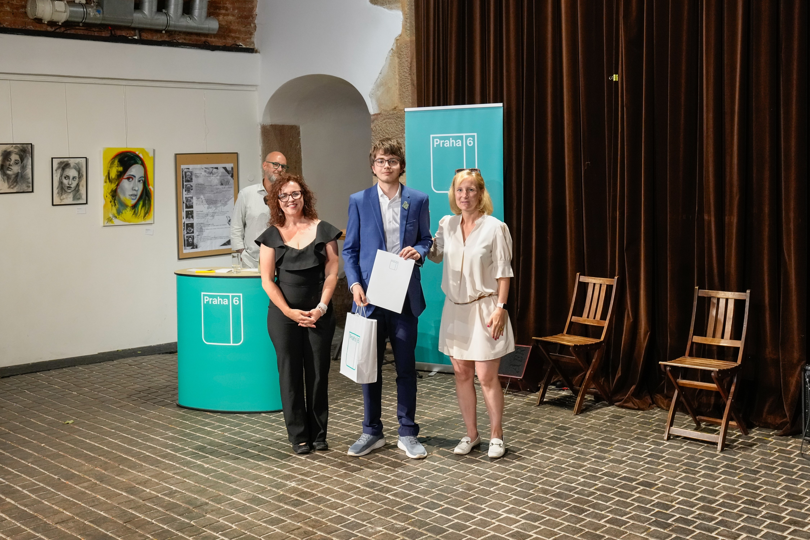

Prestižní ocenění pro Lukáše Horáka
29. 05. 2026
Městská část Praha 6 opět po roce slavnostně udělila tituly Úspěšný žák. Toto prestižní ocenění, které má na Šestce již dlouholetou tradici, vyzdvihuje výjimečné mladé osobnosti ze základních škol zřizovaných městskou částí. Letošní ročník však jasně ukázal, že školní lavice v naší městské části nehostí pouze nadané matematiky, úspěšné reprezentanty v robotice či držitele sportovních trofejí, ale také lidi s obrovským srdcem a hrdiny každodenního života.
Mezi letošními oceněnými zářil také zakládající člen studentské iniciativy VLČR a student 9. ročníku ZŠ Pod Marjánkou Lukáš Horák. Komise Lukáše ocenila za jeho mimořádný a dlouhodobý zájem o vysoké školství a vědu, který prokazuje aktivní spoluprací s Fakultou elektrotechnickou (FEL) a Fakultou jadernou a fyzikálně inženýrskou (FJFI) ČVUT v Praze. Významným důvodem pro udělení titulu byla také jeho neúnavná služba pro rozvoj vzdělávání a samotné založení nezávislé studentské iniciativy VLČR.
Toto ocenění je pro naši skupinu obrovským úspěchem a důkazem, že práce mladých lidí na poli vědy a propojování studentů má smysl a neuniká pozornosti veřejných institucí. Lukášova cesta ukazuje, že věnovat se technickým oborům a rozvíjet studentskou komunitu lze už na základní škole a že vysoké cíle nejsou překážkou, ale motivací.
Velké poděkování patří městské části Praha 6 za uznání a podporu talentované mládeže a také ZŠ Pod Marjánkou za vytváření skvělého zázemí pro rozvoj nadaných žáků. Pro celou iniciativu VLČR je toto ocenění obrovskou motivací do dalších projektů a důkazem, že jdeme správným směrem.
